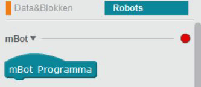
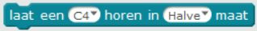

Instructies mBot
< terug naar overzichtInhoud
Introductie
- Voor je de mBot aanzet: de mBot eerst op de grond zetten of op de kop leggen!
- Hou rekening met de beperkte ruimte: zet de snelheid van de motoren niet hoger dan 150.
- Goed om te weten: een deel van de functies van mBlock (Beweging, Uiterlijk, Geluid, Pen) is om de M-Panda te besturen, niet de mBot zelf.
- Je kunt de taal van mBlock op Nederlands zetten via het menu Taal.
De mBot met de computer verbinden
De mBot kan op verschillende manieren communiceren met de computer. Bij deze Dojo gebruiken we een USB WiFi dongle. De dongle zorgt voor een rechtstreekse verbinding met de mBot, je laptop heeft verder geen internet nodig. Stappen:- Start mBlock
- Kijk bij menu Boards of de optie mBot (mCore)is aangevinkt.
- Ga naar het tabblad Robots.
- Kies in het menu Verbinden voor 2.4 Ghz Serieel, en vervolgens verbinden.
- Het rode lampje zou nu groen moeten worden. 
- Je kunt controleren of er verbinding is door te dubbelklikken op dit element: 
- Je bent nu klaar om de mBot te gaan programmeren!
De input en output van de mBot
Voelen (met de sensoren)
De mBot heeft een aantal sensoren om z'n omgeving te voelen.- Ultrasoon: dit zijn de twee 'ogen' voorop de mBot. De mBot gebruikt net als een vleermuis echo's om voorwerpen te 'zien'. Het ene oog stuurt een geluidje en het andere oog vangt de echo op.
- Lijnvolg: voor het voorwiel zitten twee sensoren die het verschil tussen licht en donker kunnen meten. Als de mBot over een lijn rijdt kan hij op deze manier zien of er een bocht aankomt.
- Licht: bovenop (onder het plastic kapje) zit een sensor die meet hoe licht het in de ruimte is.
Doen (met de actuatoren)
- Motoren: ieder wiel wordt met een aparte motor bestuurd.
- LEDs: bovenop (onder het plastic kapje) zitten twee LEDs die je elke kleur kunt maken die je wilt.
- Buzzer: ook onder het kapje zit een buzzer waarmee je de mBot verschillende hoogte tonen kunt laten maken.
Opdrachten
Voorbeeldopdracht 1: een vierkant rijden
1. De eerste stap is om de mBot een stuk vooruit te laten rijden. Let op: als je de snelheid onder ongeveer 75 instelt (dit hangt ook af van hoe vol de batterij is) zal de mBot vaak niet rijden maar hoor je alleen een zacht piepend geluid van de motor komen.2. Nu rijdt de mBot eindeloos door! Laat 'm dus weer stil staan.

3. De opdracht om stil te gaan staan wordt meteen uitgevoerd na die om te gaan rijden. Wacht hier dus even mee.
4. Laat nu de mBot een bocht maken.
5. Je merkt dat de mBot nu de bocht om blijft gaan, probeer de tijd zo in te stellen dat ie rechtsaf (of linksaf) slaat.

6. Dit stuk code wil je nu een aantal keer herhalen.

Voorbeeldopdracht 2: sensorwaarden laten zien
Om opdrachten te kunnen programmeren is het soms handig om te weten wat de sensoren van de mBot meten. Hiervoor kun je de M-Panda inschakelen: deze kan je vertellen wat een sensor 'ziet'.Kijk bijvoorbeeld wat de lichtsensor meet als je je hand bovenop de mBot houdt.
Let op 1: de LEDs op de mBot kunnen de lichtsensor beïnvloeden.
Let op 2: het is verstandig heel even te wachten tussen het uitlezen van de sensoren.

Voorbeeldopdracht 3: help, een muur!
In deze opdracht is het de bedoeling om te voorkomen dat de mBot tegen de muur botst (nadat je 'm er wel naar toe laat rijden natuurlijk).1. Laat de mBot rijden en hou in de gaten of hij al in de buurt van de muur is.
2. Zorg dat de mBot weer stil gaat staan, en sla alarm om de bijna botsing wat kracht bij te zetten.

3. Vaak zijn er meerdere manieren om hetzelfde resultaat te bereiken.

Uitdagingen
Hier nog een paar uitdagingen waar je aan kunt werken. Ze beginnen makkelijk en worden steeds moeilijker.
Ga zelf aan de gang! Natuurlijk kun je zelf iets verzinnen voor de mBot, hier zijn wat ideeën voor als je inspiratie nodig hebt:
- Een rondje rijden (uitdaging: achtje, spiraal)
- Licht- en geluidshow
- mBot moodlight
- Lichten aan in de tunnel
- Actie op het zebrapad
- Een lijn volgen
- Voorwerpen ontwijken
- Een voorwerp volgen